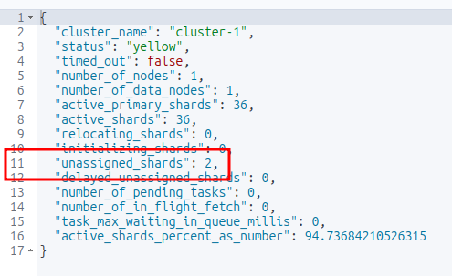
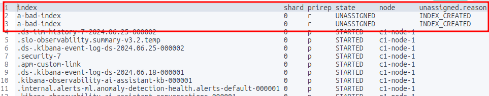
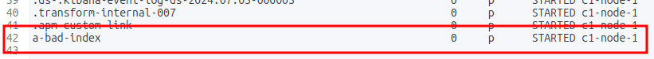

5 Cluster Management
5.1 Task: Diagnose shard issues and repair a cluster's health
While the odds are rather high that you will have some unassigned shards if you have done enough of the examples and not cleaned up after yourself we will artifically create some so the below will make some degree of sense.
Example 1: Identifying and resolving unassigned shards to improve cluster health
Requirements
- Identify the cause of unassigned shards.
- Reassign shards to nodes to improve cluster health.
- Ensure all indices are properly allocated and the cluster health status is green.
Steps
Open the Kibana Console or use a REST client
Create an index that needs more replicas than available nodes
PUT /a-bad-index { "settings": { "number_of_shards": 1, "number_of_replicas": 2 } }Check the cluster health and identify unassigned shards (you should see at least 2 unassigned shards)
GET /_cluster/health
List the unassigned shards (you should see the index name created above with 2 messages of UNASSIGNED)
GET _cat/shards?v=true&h=index,shard,prirep,state,node,unassigned.reason&s=state
Names of the unassigned shards Identify the reason for the unassigned shards
GET _cluster/allocation/explain { "index": "a-bad-index", "shard": 0, "primary": true }In the scenario where you are running an Elasticsearch cluster locally and only have one node then you simply have to lower the number of replicas
PUT /a-bad-index/_settings { "index": { "number_of_replicas": 0 } }Running the shard check again will show that the unassigned shards are now gone.
GET _cat/shards?v=true&h=index,shard,prirep,state,node,unassigned.reason&s=state
The unassigned shards are gone Verify the cluster health again
GET /_cluster/health
Test
Check the cluster health status
GET /_cluster/healthEnsure there are no unassigned shards
GET /_cat/shards?v&h=index,shard,prirep,state,unassigned.reason,node
Considerations
- The cluster reroute command should be used carefully, especially when accepting data loss.
- Force merging should be done during low traffic periods as it is resource-intensive.
- Regularly monitoring cluster health can prevent shard allocation issues.
Documentation
Start here:
For more detail:
Example 2: Identifying and resolving a shard failure in a cluster
Requirements
- Identify the cause of a shard failure
- Resolve the issue and restore the cluster’s health
Steps
Open the Kibana Console or use a REST client
Check the cluster’s health
GET /_cluster/healthIdentify the index and shard with issues
GET /_cat/shardsCheck the shard’s status
GET /_cat/shards/{index_name}-{shard_number}Resolve the issue (e.g., restart a node, reassign the shard)
POST /_cluster/reroute { "commands": [ { "move": { "index": "{index_name}", "shard": {shard_number}, "from_node": "{node_name}", "to_node": "{new_node_name}" } } ] }Verify the cluster’s health
GET /_cluster/health
Test
Verify that the shard is no longer in a failed state
GET /_cat/shards/{index_name}-{shard_number}
Considerations
- Regularly monitoring the cluster’s health can help identify issues before they become critical.
- Understanding the cause of the shard failure is crucial to resolving the issue effectively.
Documentation
5.2 Task: Backup and restore a cluster and/or specific indices
This example is specific to a local Elasticsearch cluster, not the Elastic Cloud version. I would recommend learning how to set up a backup and restore from the Kibana UI at Home > Management > Data > Snapshot and Restore. I didn’t find any documentation on the use of the Kibana dashboard to perform backups and restores.
Example 1: Create a snapshot of multiple indices and and restore them
This example is specific to a local Elasticsearch cluster, not the Elastic Cloud version. I would recommend learning how to set up a backup and restore from the Kibana UI at Home > Management > Data > Snapshot and Restore. I didn’t find any documentation on the use of the Kibana dashboard to perform backups and restores.
Requirements
- Back up the entire Elasticsearch cluster (all the indices on the cluster)
- Restore specific indices from the backup
Steps
(Do this is you haven’t already done it due to a previous exercise) Configure the es01 container instance with a backups directory
In a terminal execute bash on the docker container
sudo docker exec -it es01 /bin/bashCreate a backup directory in the current directory of the container
mkdir backupsIf you change directory to
backupsand runpwdyou’ll find that the full path is/usr/share/elasticsearch/backups.Exit the container shell
exitUpdate the elasticsearch.yml
path.repovariable and restart the clusterWhen we created two single-node clusters (Appendix: Setting Up An Additional Single-node Cluster for Cross-cluster Search (CCS)) we renamed the YAML files for the two cluster:
- elasticsearch-es01.yml
- elasticsearch-es02.yml
For the purposes of this example update elasticsearch-es01.yml.
path.repo: ["/usr/share/elasticsearch/backups"]- Copy the YAML file back into the container
sudo docker cp elasticsearch-es01.yml es01:/usr/share/elasticsearch/config/elasticsearch.yml- Restart es01
Open the Kibana Console or use a REST client.
Create two sample indexes with some data
POST /_bulk { "index": { "_index": "example_index1", "_id": "1" } } { "name": "Document 1.1" } { "index": { "_index": "example_index1", "_id": "2" } } { "name": "Document 1.2" } POST /_bulk { "index": { "_index": "example_index2", "_id": "1" } } { "name": "Document 2.1" } { "index": { "_index": "example_index2", "_id": "2" } } { "name": "Document 2.2" }Confirm the documents were indexed
GET example_index*/_searchCreate a snapshot repository
PUT /_snapshot/example_index_backup { "type": "fs", "settings": { "location": "/usr/share/elasticsearch/backups" } }Create a snapshot of the two example indices
PUT /_snapshot/example_index_backup/snapshot_1 { "indices": "example_index1,example_index2", "ignore_unavailable": true, "include_global_state": false }Verify the snapshot status
GET /_snapshot/example_index_backup/snapshot_1Delete the two known indices
DELETE /example_index1 DELETE /example_index2Check that the two indexes are gone.
GET /example_index*/_searchRestore both indices from the snapshot
POST /_snapshot/example_index_backup/snapshot_1/_restoreConfirm both indices were restored
GET /example_index*/_searchRestore one index from the snapshot
DELETE /example_index1 DELETE /example_index2POST /_snapshot/example_index_backup/snapshot_1/_restore { "indices": "example_index2", "ignore_unavailable": true, "include_global_state": false }
Test
Verify the index has been restored
GET /example_index2/_searchVerify the integrity of the snapshot
POST /_snapshot/example_index_backup/_verifyCheck the cluster health to ensure the index is properly allocated
GET /_cluster/health/example_index2
Considerations
- The snapshot repository is configured with the fs (file system) type, which stores the backup data in the container’s local file system. For production use, you may want to use a more suitable repository type, such as s3 or gcs.
- The snapshot name snapshot_1 is used to create a backup of the two indices.
Clean-up (optional)
Delete the indices
DELETE /example_index1 DELETE /example_index2Delete the Backup
DELETE /_snapshot/example_index_backup/snapshot_1
Documentation
Example 2: Create a snapshot of an entire cluster and restore a single index
Requirements
- Back up the entire Elasticsearch cluster
- Restore specific indices from the backup
Steps
(Do this is you haven’t already done it due to a previous exercise) Configure the es01 container instance with a backups directory
In a terminal execute bash on the docker container
sudo docker exec -it es01 /bin/bashCreate a backup directory in the current directory of the container
mkdir backupsIf you change directory to
backupsand runpwdyou’ll find that the full path is/usr/share/elasticsearch/backups.Exit the container shell
exitUpdate the elasticsearch.yml
path.repovariable and restart the clusterWhen we created two single-node clusters (Appendix: Setting Up An Additional Single-node Cluster for Cross-cluster Search (CCS)) we renamed the YAML files for the two cluster:
- elasticsearch-es01.yml
- elasticsearch-es02.yml
For the purposes of this example update elasticsearch-es01.yml.
path.repo: ["/usr/share/elasticsearch/backups"]- Copy the YAML file back into the container
sudo docker cp elasticsearch-es01.yml es01:/usr/share/elasticsearch/config/elasticsearch.yml- Restart es01
Open the Kibana Console or use a REST client.
Create two sample indexes with some data
POST /_bulk { "index": { "_index": "example_index1", "_id": "1" } } { "name": "Document 1.1" } { "index": { "_index": "example_index1", "_id": "2" } } { "name": "Document 1.2" } POST /_bulk { "index": { "_index": "example_index2", "_id": "1" } } { "name": "Document 2.1" } { "index": { "_index": "example_index2", "_id": "2" } } { "name": "Document 2.2" }Confirm the documents were indexed
GET example_index*/_searchCreate a snapshot repository
PUT /_snapshot/example_cluster_backup { "type": "fs", "settings": { "location": "/usr/share/elasticsearch/backups" } }Create a snapshot of the entire cluster
PUT /_snapshot/example_cluster_backup/full_cluster_backupVerify the snapshot status
GET /_snapshot/example_cluster_backup/full_cluster_backupDelete one of the existing indices
DELETE example_index2Restore that specific index from the snapshot with a different name
POST /_snapshot/example_cluster_backup/full_cluster_backup/_restore { "indices": "example_index2", "rename_pattern": "example_index2", "rename_replacement": "restored_example_index2" }
Test
Verify the index has been restored
GET /restored_example_index2/_searchThe response should include the documents from the original
example_index2.Optionally, you can delete the original index and verify that the restored index remains
DELETE /example_index2GET /restored_example_index2/_searchVerify the integrity of the snapshot
POST /_snapshot/example_cluster_backup/_verifyCheck the cluster health to ensure the index is properly allocated
GET /_cluster/health/restored_example_index2
Considerations
- The snapshot repository is configured with the fs (file system) type, which stores the backup data in the container’s local file system. For production use, you may want to use a more suitable repository type, such as s3 or gcs.
- The snapshot name full_cluster_backup is used to create a backup of the entire cluster.
- During the restore process, the
rename_patternandrename_replacementoptions are used to rename the restored index torestored_example_index2.
Clean-up (optional)
Delete the indices
DELETE /example_index1 DELETE /example_index2 DELETE /restored_example_index2Delete the backup
DELETE /_snapshot/example_cluster_backup/full_cluster_backup
Documentation
Example 3: Creating a snapshot of a single index and restoring it
Requirements
- Create a repository for storing snapshots.
- Take a snapshot of the specified index.
- Restore the snapshot to the cluster.
- Verify the integrity and availability of the restored data.
Steps
(Do this is you haven’t already done it due to a previous exercise) Configure the es01 container instance with a backups directory
In a terminal execute bash on the docker container
sudo docker exec -it es01 /bin/bashCreate a backup directory in the current directory of the container
mkdir backupsIf you change directory to
backupsand runpwdyou’ll find that the full path is/usr/share/elasticsearch/backups.Exit the container shell
exitUpdate the elasticsearch.yml
path.repovariable and restart the clusterWhen we created two single-node clusters (Appendix: Setting Up An Additional Single-node Cluster for Cross-cluster Search (CCS)) we renamed the YAML files for the two cluster:
- elasticsearch-es01.yml
- elasticsearch-es02.yml
For the purposes of this example update elasticsearch-es01.yml.
path.repo: ["/usr/share/elasticsearch/backups"]- Copy the YAML file back into the container
sudo docker cp elasticsearch-es01.yml es01:/usr/share/elasticsearch/config/elasticsearch.yml- Restart es01
Open the Kibana Console or use a REST client
Create two sample indexes with some data
POST /_bulk { "index": { "_index": "example_index1", "_id": "1" } } { "name": "Document 1.1" } { "index": { "_index": "example_index1", "_id": "2" } } { "name": "Document 1.2" } POST /_bulk { "index": { "_index": "example_index2", "_id": "1" } } { "name": "Document 2.1" } { "index": { "_index": "example_index2", "_id": "2" } } { "name": "Document 2.2" }Confirm the documents were indexed
GET example_index*/_searchCreate a snapshot repository
PUT /_snapshot/single_index_backup { "type": "fs", "settings": { "location": "/usr/share/elasticsearch/backups" } }Take a snapshot of the specific index
PUT /_snapshot/single_index_backup/snapshot_1 { "indices": "example_index1", "ignore_unavailable": true, "include_global_state": false }Verify the snapshot status
GET /_snapshot/single_index_backup/snapshot_1Delete the index to simulate data loss (optional for testing restore)
DELETE /example_index1Restore the snapshot
POST /_snapshot/single_index_backup/snapshot_1/_restore { "indices": "example_index1", "ignore_unavailable": true, "include_global_state": false }
Test
Verify the index has been restored
GET /example_index1/_searchVerify the integrity of the snapshot
POST /_snapshot/single_index_backup/_verifyCheck the cluster health to ensure the index is properly allocated
GET /_cluster/health/example_index1
Considerations
- The repository type fs is used for simplicity; other types like s3 can be used depending on the environment.
ignore_unavailableensures the snapshot process continues even if some indices are missing.include_global_stateis set to false to avoid restoring cluster-wide settings unintentionally.
Clean-up (optional)
Delete the indices
DELETE /example_index1 DELETE /example_index2 DELETE /restored_example_index2Delete the Backup
DELETE /_snapshot/single_index_backup/snapshot_1
Documentation
5.3 Task: Configure a snapshot to be searchable
Example 1: Creating a searchable snapshot for the product catalog index
This can also be done through the Home > Management > Data > Index Lifecycle Mangement UI. Again, no documentation on how to perform this using the Kibana dashboard.
Sigh. This will only work if you have an Enterprise license.
Requirements
- Create a repository for storing snapshots.
- Take a snapshot of the specified index.
- Mount the snapshot as a searchable index.
- Verify the index is searchable without restoring it to the cluster.
Steps
(Do this is you haven’t already done it due to a previous exercise) Configure the es01 container instance with a backups directory
In a terminal execute bash on the docker container
sudo docker exec -it es01 /bin/bashCreate a backup directory in the current directory of the container
mkdir backupsIf you change directory to
backupsand runpwdyou’ll find that the full path is/usr/share/elasticsearch/backups.Exit the container shell
exitUpdate the elasticsearch.yml
path.repovariable and restart the clusterWhen we created two single-node clusters (Appendix: Setting Up An Additional Single-node Cluster for Cross-cluster Search (CCS)) we renamed the YAML files for the two cluster:
- elasticsearch-es01.yml
- elasticsearch-es02.yml
For the purposes of this example update elasticsearch-es01.yml.
path.repo: ["/usr/share/elasticsearch/backups"]- Copy the YAML file back into the container
sudo docker cp elasticsearch-es01.yml es01:/usr/share/elasticsearch/config/elasticsearch.yml- Restart es01
Open the Kibana Console or use a REST client.
Create a sample index with some data
POST _bulk { "index": { "_index": "products", "_id": "1" } } { "name": "Laptop", "category": "Electronics", "price": 999.99, "stock": 50, "description": "A high-performance laptop with 16GB RAM and 512GB SSD." } { "index": { "_index": "products", "_id": "2" } } { "name": "Smartphone", "category": "Electronics", "price": 699.99, "stock": 100, "description": "A latest model smartphone with a stunning display and powerful processor." } { "index": { "_index": "products", "_id": "3" } } { "name": "Headphones", "category": "Accessories", "price": 199.99, "stock": 200, "description": "Noise-cancelling over-ear headphones with superior sound quality." } { "index": { "_index": "products", "_id": "4" } } { "name": "Coffee Maker", "category": "Home Appliances", "price": 89.99, "stock": 75, "description": "A programmable coffee maker with a 12-cup capacity." } { "index": { "_index": "products", "_id": "5" } } { "name": "Running Shoes", "category": "Footwear", "price": 129.99, "stock": 150, "description": "Lightweight running shoes with excellent cushioning and support." } { "index": { "_index": "products", "_id": "6" } } { "name": "Backpack", "category": "Accessories", "price": 49.99, "stock": 300, "description": "Durable backpack with multiple compartments and ergonomic design." }Confirm the documents were indexed
GET products/_searchCreate a snapshot repository
PUT /_snapshot/products_index_backup { "type": "fs", "settings": { "location": "/usr/share/elasticsearch/backups" } }Take a snapshot of the specific index
PUT /_snapshot/products_index_backup/snapshot_1 { "indices": "products", "ignore_unavailable": true, "include_global_state": false }Verify the snapshot status
GET /_snapshot/products_index_backup/snapshot_1Delete the index to simulate data loss (optional for testing restore)
DELETE /productsMount the snapshot as a searchable index
PUT /_snapshot/products_index_backup/snapshot_1/_mount { "index": "products", "renamed_index": "products_backup_searchable" }If you don’t have an Enterprise license the above will fail.
Test
Verify the mounted index is searchable
GET /products_backup_searchable/_searchCheck the cluster health to ensure the searchable snapshot is properly allocated
GET /_cluster/health/products_backup_searchable
Considerations
- The repository type fs is used for simplicity; other types like s3 can be used depending on the environment.
ignore_unavailableensures the snapshot process continues even if some indices are missing.include_global_stateis set to false to avoid restoring cluster-wide settings unintentionally.- Mounting the snapshot as a searchable index allows for searching the data without the need to fully restore it, saving resources and time.
Clean-up (optional)
Delete the index
DELETE /productsDelete the Backup
DELETE /_snapshot/products_index_backup/snapshot_1
Documentation
5.4 Task: Configure a cluster for cross-cluster search
FYI: This is similar to the example at Searching Data > Write and execute a query that searches across multiple clusters
Example 1: Setting up cross-cluster search between a local cluster and a remote cluster for an e-commerce catalog
The following instructions are for two single-node clusters running locally on your computer.
Requirements
- Configure the remote cluster to be searchable from the local cluster.
- Ensure secure communication between clusters.
- Verify the cross-cluster search functionality.
Steps
Open the Kibana Console or use a REST client.
Configure the remote cluster on the local cluster
PUT /_cluster/settings { "persistent": { "cluster": { "remote": { "es01": { "seeds": [ "es01:9300" ], "skip_unavailable": true }, "es02": { "seeds": [ "es02:9300" ], "skip_unavailable": false } } } } }(optional if you are doing this locally) Set up security settings where you have keystores properly setup. On the remote cluster:
PUT /_cluster/settings { "persistent": { "xpack.security.enabled": true, "xpack.security.transport.ssl.enabled": true, "xpack.security.transport.ssl.verification_mode": "certificate", "xpack.security.transport.ssl.keystore.path": "/path/to/keystore.jks", "xpack.security.transport.ssl.truststore.path": "/path/to/truststore.jks" } }On the local cluster:
PUT /_cluster/settings { "persistent": { "xpack.security.enabled": true, "xpack.security.transport.ssl.enabled": true, "xpack.security.transport.ssl.verification_mode": "certificate", "xpack.security.transport.ssl.keystore.path": "/path/to/keystore.jks", "xpack.security.transport.ssl.truststore.path": "/path/to/truststore.jks" } }Verify the remote cluster configuration
GET /_remote/infoIndex product documents into each cluster.
For es01 (potentially the local cluster):
POST /products/_bulk { "index": { "_id": "1" } } { "product": "Elasticsearch Guide", "category": "Books", "price": 29.99 } { "index": { "_id": "2" } } { "product": "Advanced Elasticsearch", "category": "Books", "price": 39.99 } { "index": { "_id": "3" } } { "product": "Elasticsearch T-shirt", "category": "Apparel", "price": 19.99 } { "index": { "_id": "4" } } { "product": "Elasticsearch Mug", "category": "Apparel", "price": 12.99 }For es02 (potentially the “remote” cluster) through the command line:
curl -u elastic:[your password here] -X POST "http://localhost:9201/products/_bulk?pretty" -H 'Content-Type: application/json' -d' { "index": { "_id": "5" } } { "product": "Elasticsearch Stickers", "category": "Accessories", "price": 4.99 } { "index": { "_id": "6" } } { "product": "Elasticsearch Notebook", "category": "Stationery", "price": 7.99 } { "index": { "_id": "7" } } { "product": "Elasticsearch Pen", "category": "Stationery", "price": 3.49 } { "index": { "_id": "8" } } { "product": "Elasticsearch Hoodie", "category": "Apparel", "price": 45.99 } '
Perform a cross-cluster search query
GET /remote_cluster:products/_search
Test
Verify the remote cluster info
GET /_remote/infoSearch the remote cluster from the local cluster
GET /remote_cluster:product_catalog/_search
Considerations
- Ensure that the nodes listed in the seeds setting are accessible from the local cluster.
- Security settings such as SSL/TLS should be configured to ensure secure communication between clusters.
- Regularly monitor the connection status between the clusters to ensure reliability.
Clean-up (optional)
Delete the es01 index.
DELETE productsDelete the es02 index from the command line.
curl -u elastic:[your password here] -X DELETE "http://localhost:9201/products?pretty"
Documentation
5.5 Task: Implement cross-cluster replication
There are a number of ways to set up cross-cluster replication and they can all be found here.
Cross-cluster replication needs an Enterprise license
Example 1: Setting up cross-cluster replication for the product catalog index between a leader cluster and a follower cluster
In this example, we will run 2 single-node clusters locally using containers (as we have for all the other examples).
- The es01 container instance will be considered
- leader
- remote
- The es02 container instance will be considered
- follower
- local
You may also need to get a free 30-day trial license of certain features including cross-cluster replication. Since the second cluster is not hooked up to Kibana execute this from the command line (assuming you called the docker instance es02 as we have been using in this guide):
curl -v -u elastic:[YOUR ELASTIC PASSWORD HERE] -X POST "http://localhost:9201/_license/start_trial?pretty&acknowledge=true"Requirements
- Configure remote cluster settings on both leader and follower clusters.
- Set up the leader index on the leader cluster.
- Configure the follower index on the follower cluster to replicate from the leader index.
- Ensure secure communication between clusters.
- Verify replication and data consistency.
Steps
Open the Kibana Console or use a REST client.
Configure the remote cluster settings on the leader cluster (es01)
PUT /_cluster/settings { "persistent": { "cluster": { "remote": { "es01": { "seeds": [ "es01:9300" ], "skip_unavailable": true }, "es02": { "seeds": [ "es02:9300" ], "skip_unavailable": false } } } } }Configure the local cluster settings on the follower cluster (es02)
curl -v -u elastic:[YOUR ELASTIC PASSWORD HERE] -X PUT "http://localhost:9201/_cluster/settings?pretty" -H "Content-Type: application/json" -d' { "persistent": { "cluster": { "remote": { "es01": { "seeds": [ "es01:9300" ], "skip_unavailable": true }, "es02": { "seeds": [ "es02:9300" ], "skip_unavailable": false } } } } }'Create the leader index on the leader cluster (es01)
PUT /product_catalog { "settings": { "number_of_shards": 1, "number_of_replicas": 1 }, "mappings": { "properties": { "product_id": { "type": "keyword" }, "name": { "type": "text" }, "description": { "type": "text" }, "price": { "type": "double" } } } }Index sample documents in the leader index
POST /product_catalog/_bulk { "index": { "_id": "1" } } { "product_id": "p001", "name": "Product 1", "description": "Description of product 1", "price": 20.0 } { "index": { "_id": "2" } } { "product_id": "p002", "name": "Product 2", "description": "Description of product 2", "price": 30.0 }Configure the follower index on the follower cluster through the command line
curl -v -u elastic:[YOUR ELASTIC PASSWORD HERE] -X PUT "http://localhost:9201/product_catalog_follower/_ccr/follow?pretty" -H "Content-Type: application/json" -d' { "remote_cluster": "es01", "leader_index": "product_catalog" }'
Test
Verify the follower index (es02) is following the leader index
curl -v -u elastic:[YOUR ELASTIC PASSWORD HERE] "http://localhost:9201/product_catalog_follower/_stats?pretty"Check the data in the follower index (es02) to ensure it matches the leader (es01) index
curl -v -u elastic:[YOUR ELASTIC PASSWORD HERE] "http://localhost:9201/product_catalog_follower/_search?pretty"
Considerations
- Ensure the nodes listed in the seeds setting are accessible from the follower cluster.
- Security settings such as SSL/TLS should be configured to ensure secure communication between clusters (but not for this example given the YAML changes suggested in the Appendix).
- Regularly monitor the replication status and performance to ensure data consistency and reliability.
Clean-up (optional)
Delete the follower configuration
curl -v -u elastic:[YOUR ELASTIC PASSWORD HERE] -X DELETE "http://localhost:9201/product_catalog_follower?pretty"Delete the index
DELETE product_catalog